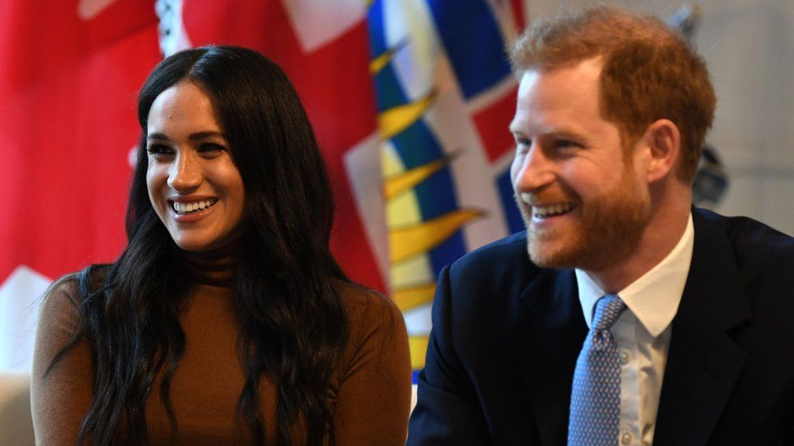
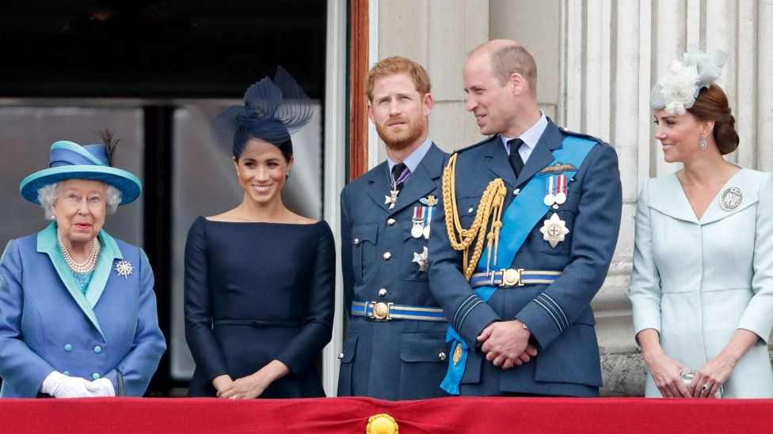
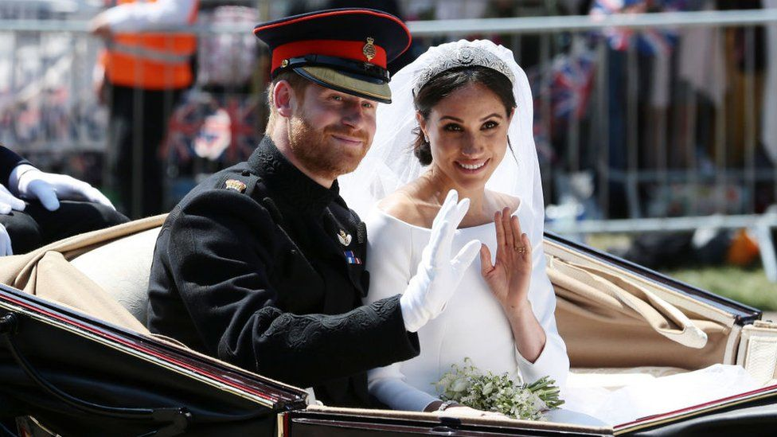

Prince Harry and Meghan: Where do they get their money?
Prince Harry says his family cut him off financially after he and wife Meghan "stepped back" from being senior royals and moved to California.
So, where do they get their money from?
Do Prince Harry and Meghan get money from the Royal Family?
The Duke and Duchess of Sussex announced in January 2020 that they wanted to stop being working members of the Royal Family and would "work towards" being financially independent. It was understood the couple would continue to receive money for a time from Harry's father under the new agreement, although it is unclear whether that would come from the Duchy of Cornwall - a vast portfolio of property and financial investments - his personal wealth, or a combination of the two. Prince Charles's accounts suggest about £5.6m was spent funding the activities of both the couple and the Duke and Duchess of Cambridge in the year to March 2020. But Prince Harry told Oprah Winfrey the Royal Family had "literally cut me off financially" after that point.
It's not clear whether he was referring to the money the couple previously received from Prince Charles's income from the Duchy of Cornwall, the taxpayer-funded sovereign grant, or both. Details from Prince Charles's accounts for this period have not yet been released, and his private office declined to comment.
- 12 things we learned from Meghan's Oprah interview
- Harry and Meghan rattle monarchy's gilded cage
Are the Duke and Duchess of Sussex wealthy?
Both the Duke and Duchess have considerable personal wealth. Prince William and Prince Harry received the bulk of the £13m fortune left by their mother Princess Diana. Speaking of their move to the US, he told Oprah that "I've got what my mum left me and without that we wouldn't have been able to do this". Prince Harry is also thought to have been left millions of pounds by his great-grandmother, the Queen Mother, says BBC royal correspondent Nick Witchell. During her acting career, the Duchess of Sussex earned a reported payment of $50,000 (£38,300) per episode for the legal drama Suits. She also ran a lifestyle blog, and designed her own fashion line for a Canadian brand.
What other income do they have?
As they are no longer "working royals," Harry and Meghan are free to make their own income. The couple were not paid for the interview with Oprah, but since moving to the US they have made deals with streaming services Netflix and Spotify. There has been speculation that these deals are worth millions.
They have set up an organisation called Archewell, which has production arms alongside a non-profit foundation.
Who pays for their security?
When the couple lived in the UK they were given a security detail provided by the Metropolitan Police. It's not known how much this cost. After the Canadian government announced it would stop providing security for the family, Harry and Meghan decided to move to the US. There, American billionaire and media mogul Tyler Perry offered the couple a home to stay in and security during the early months of lockdown, the couple revealed. Asked by Oprah how the couple would respond to accusations of being "money-grabbing", Prince Harry said the deals with Netflix and Spotify were "never part of the plan", but were necessary. "From my perspective all I needed was enough money to be able to pay for security, to keep my family safe," he said.
Who funded the couple when they were working royals?
Before deciding to step back from their royal duties, 95% of the couple's income came from Prince Charles's income from the Duchy of Cornwall. Money from the Duchy - just over £5m in total in 2018-19 - covered the public duties of Prince Harry and Meghan, as well as the Duke and Duchess of Cambridge, and some of their private costs. The taxpayer-funded Sovereign Grant made up the other 5% of their income.
This grant is paid from the government to the Royal Family to cover expenses for official duties and looking after royal palaces. It is worth a total of £85.9m this financial year and is funded by profits from the Crown Estate - commercial properties owned by the Crown. The Duke and Duchess announced in September that they had repaid the £2.4m cost of renovating their home, Frogmore Cottage in Windsor, a bill initially footed by the UK taxpayer.
What is the Crown Estate?
- An independent commercial property business and one of the largest property portfolios in the UK
- The majority of assets are in London, but the estate also owns property in Scotland, Wales and Northern Ireland
- Holdings include Windsor Great Park and Ascot racecourse, but most is residential and commercial property
- Managed by an independent organisation, with any profit paid to the Treasury for the benefit of all UK taxpayers
- Funds the Sovereign Grant which supports official royal duties and maintains the occupied royal palaces